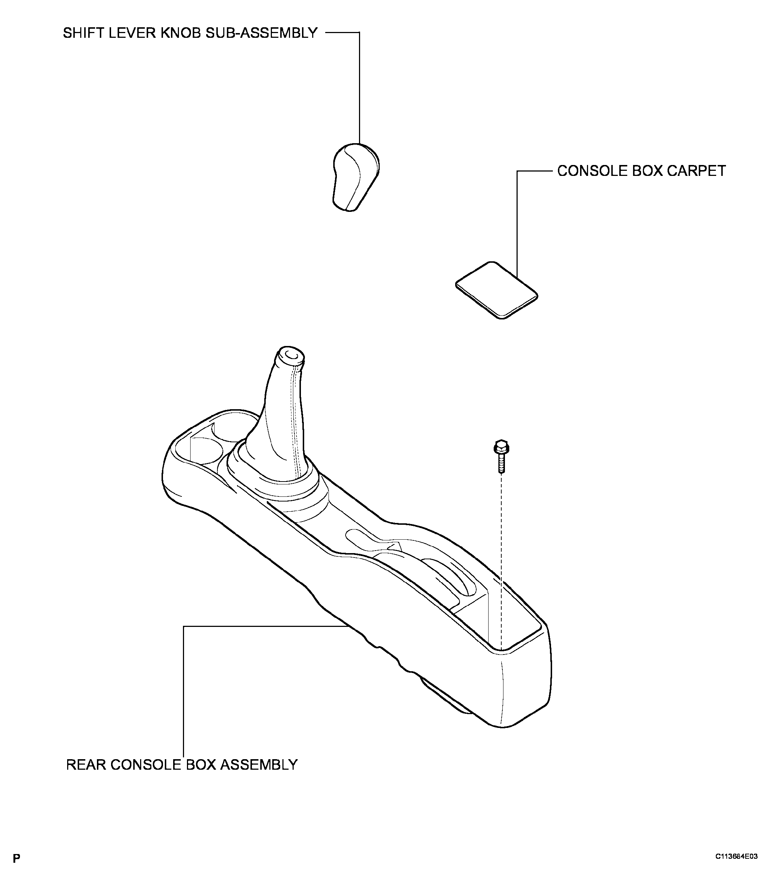
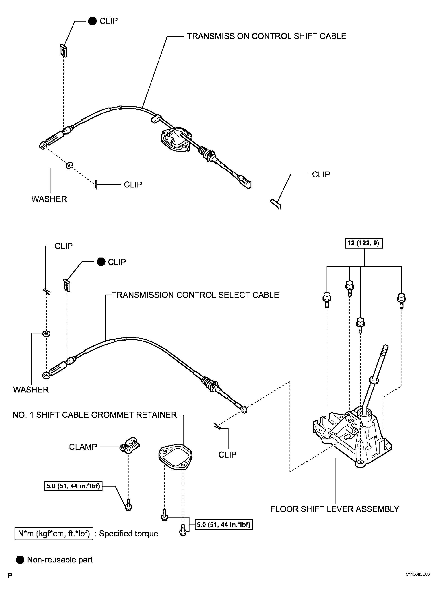

Floor Shift Lever Assembly: Components
Fig 1: Identifying Floor Shift Lever Assembly Components (1 Of 2)

Courtesy of © TOYOTA, LICENSE AGREEMENT TMS1002
Fig 2: Identifying Floor Shift Lever Assembly Components (2 Of 2)

Courtesy of © TOYOTA, LICENSE AGREEMENT TMS1002